Lab 11: Grid Localization using Bayes Filter in the Real World
ECE4160 Fast Robotics — Spring 2026
Connor Lynaugh
Overview
Lab 11 implements grid localization using a Bayes Filter, performing simulation on a local device and sharing the measurement results over Bluetooth. The provided Lab 11 Jupyter notebook was used in combination with a collection of previous Bluetooth files to implement this function.
Simulation
The first step of this lab was to verify that the simulation script, lab11sym.ipynb, was correctly functioning on my local device. The complete grid localization script can be seen plotted and printed below.
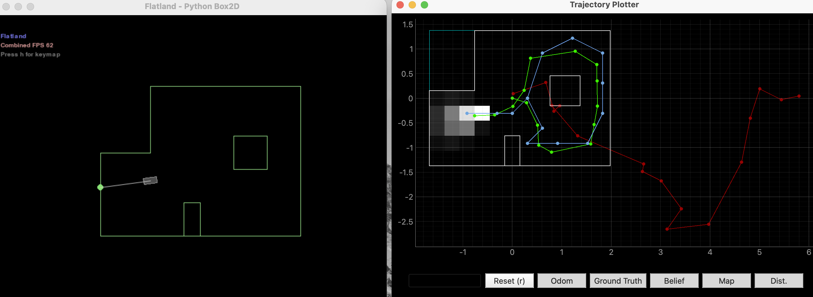
The green line represents the robot’s ground truth, the red line represents the location data derived from odometry, and the blue line represents the location data derived from the Bayes filter. The grayscale grid tiles represent the final distribution of probabilities where the robot may be, with whiter tiles representing higher probabilities. Given this plot, the Bayes filter is substantially more reliable than the odometry, staying within the map and tracking the ground truth with only a little uncertainty throughout the movement. This matches the findings from Lab 10.
Real World Localization
In this lab, instead of relying on the noisy and unreliable odometry data, only depth/ToF measurement steps were used to update a Bayes filter for localization. The Arduino function MAP from Lab 9 was retrofitted to spin the robot in place, collecting 18 measurements at each 20 degree yaw using only the front time-of-flight sensor.
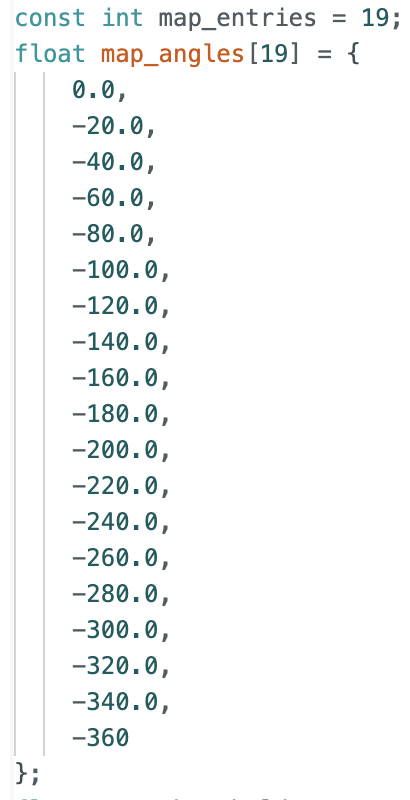
The implementation of the map case can be found in the Lab 9 report. The only adaptation is the above change, the array of angles, and the size of entries. Note that the angles are negative so that the robot turns in the counterclockwise direction.
Additionally, new PID tuning was required. The following parameters were found to efficiently and accurately track each intended angle with little overshoot. The matching graph corresponds to the robot’s accuracy turning in place.
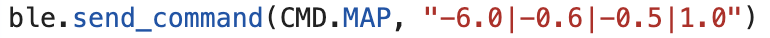
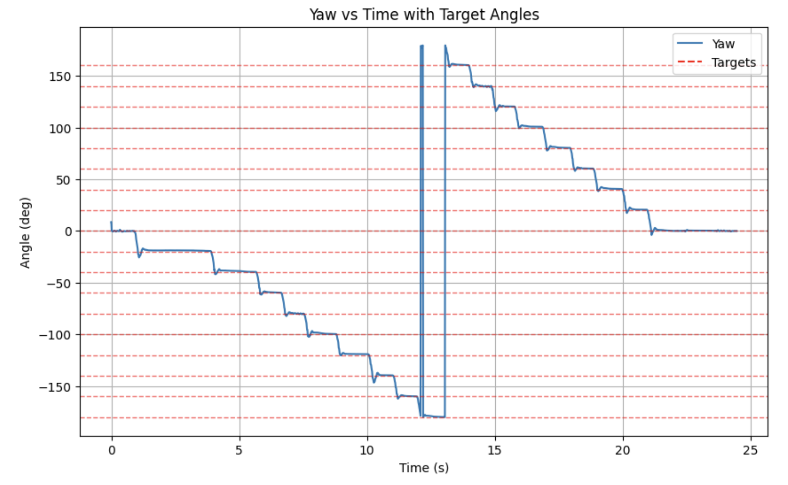
After the robot settles within 1 degree of the intended angle for more than 500 ms, the forward distance to the nearest wall is collected on TOF1. Once the 18 measurements are collected, the robot uses the SEND_MAP case to pass all measurements and their corresponding headings to the Bayes filter on my local device, where Lab 9’s notification handler receives them. For additional information, please refer to Lab 9’s page.
The Python function perform_observation_loop calls the relevant Bluetooth commands discussed above to collect the measurements, modify their structure into usable forms, and then pass them to the Bayes Filter update step.
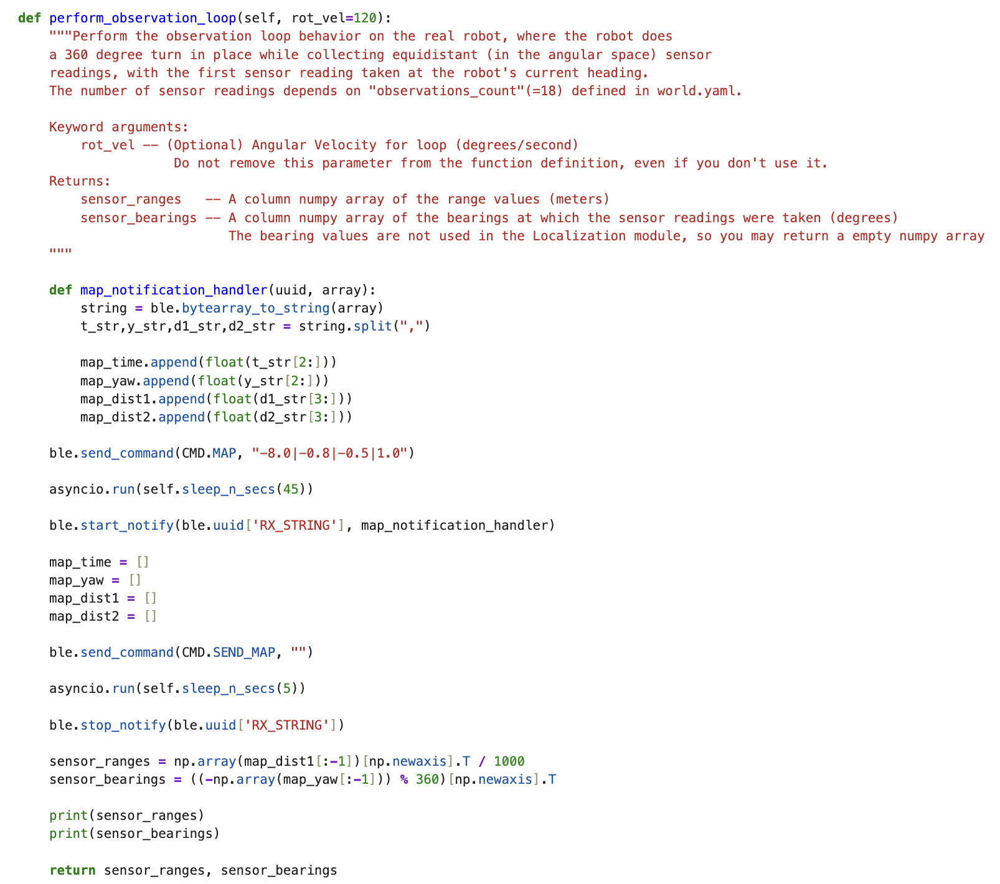
This function calls the MAP command with the necessary PID parameters before setting up the notification handler and requesting the measurements over Bluetooth using the SEND_MAP command. ToF measurements are divided by 1000 to change units into meters, as expected for the provided Bayes Filter. The sensor headings are trimmed to cut the last measurement, which is an additional 0 degree measurement provided to complete a full rotation for debugging purposes. They are also negated to match counterclockwise rotation, and the modulus with 360 is used to correctly wrap any oversized measurements. The transpose is taken of both data arrays in order to provide vertical data arrays as expected by the provided Bayes Filter.
A helper function sleep_n_secs was used to asynchronously pause the Python simulation while the robot collects and sends measurements in real time. This was executed using asyncio.run to ensure sleep only blocks the running kernel and not any necessary Bluetooth communication.
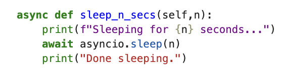
Testing
Localization was tested using the same four points of (-3,-2), (0,3), (5,3), and (5,-3) from Lab 9. For each one, I ran the localization a few times to ensure the results were consistent. Note that the above points are described in measurements of feet, whereas the simulation and its grid coordinates are in meters.
Point (5,3)

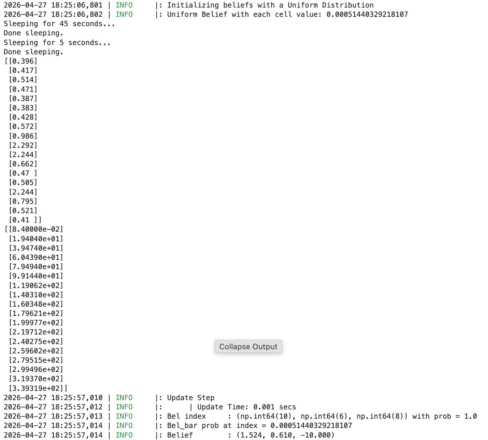
Point (5,3) was alright at localizing. Localization would consistently converge to the correct x coordinate, but with a consistent y drift downwards. I suspect that this location is the most prone to ToF sensor error, given that it has many nearby walls, especially the center box, while the sensor is configured to its longDistanceMode and many walls are too far to detect reliably. One of the worst runs can be found below.
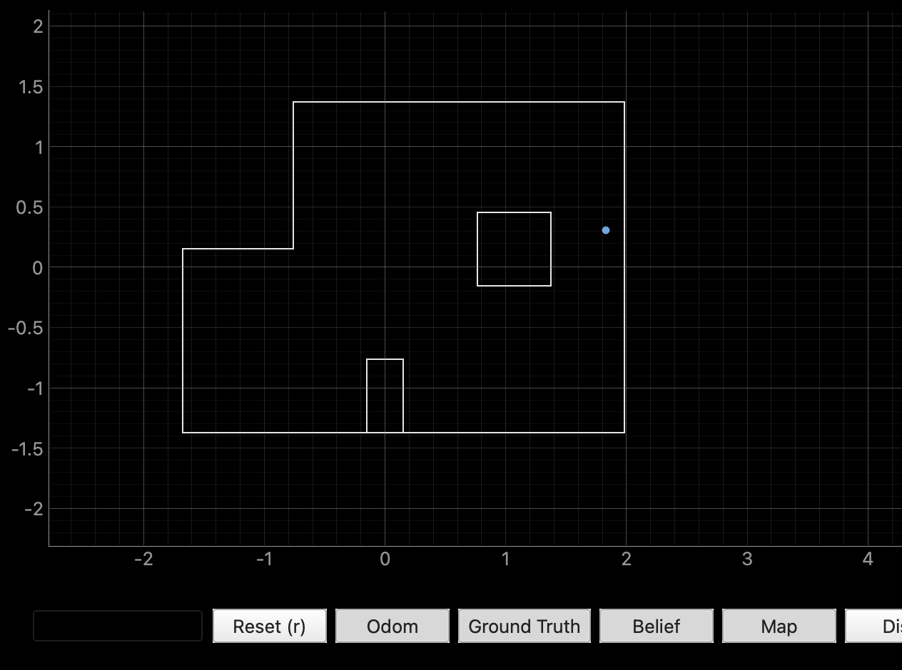
Point (0,3)

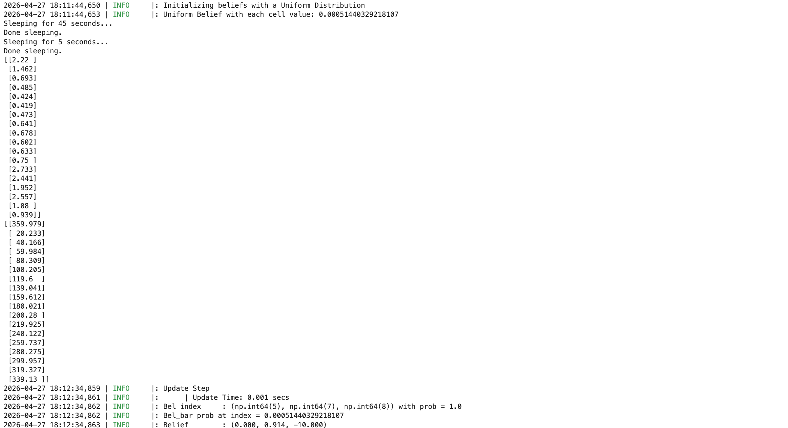
Point (0,3) was great at localizing. This point had many unique walls visible from the center of the map, none of which were too close or too far for accurate sensor readings.
Point (-3,-2)
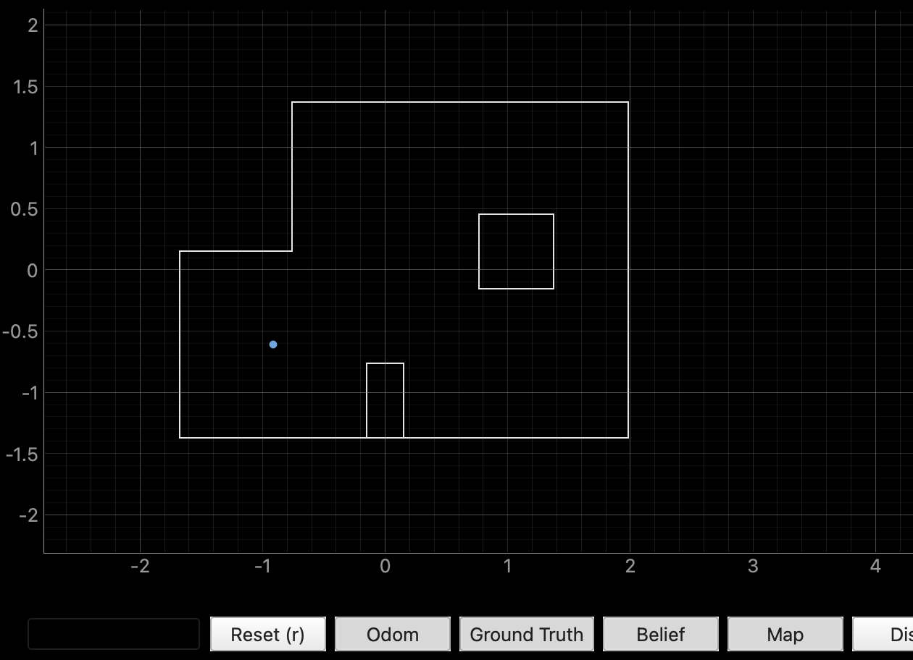
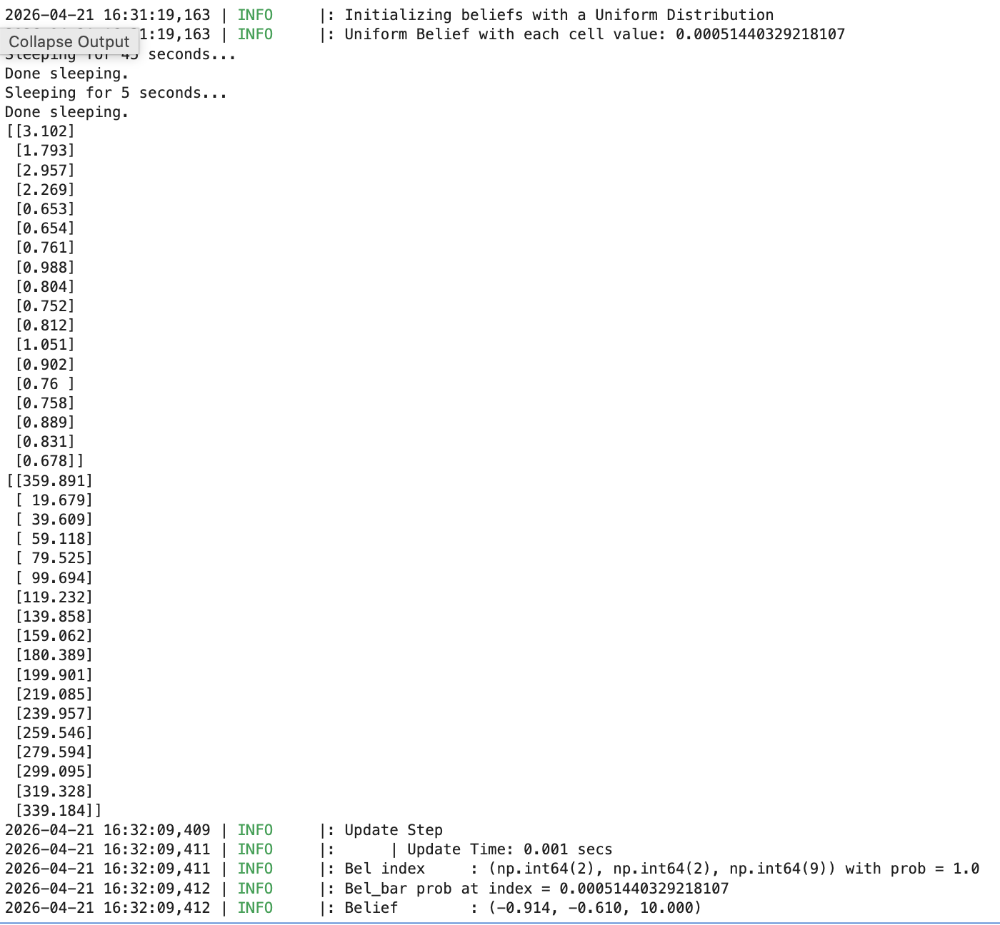
Point (-3,-2) was also great at localizing. This point had consistent distance readings after its first couple of readings down the open corridor, which helped the localization belief converge.
Point (5,-3)
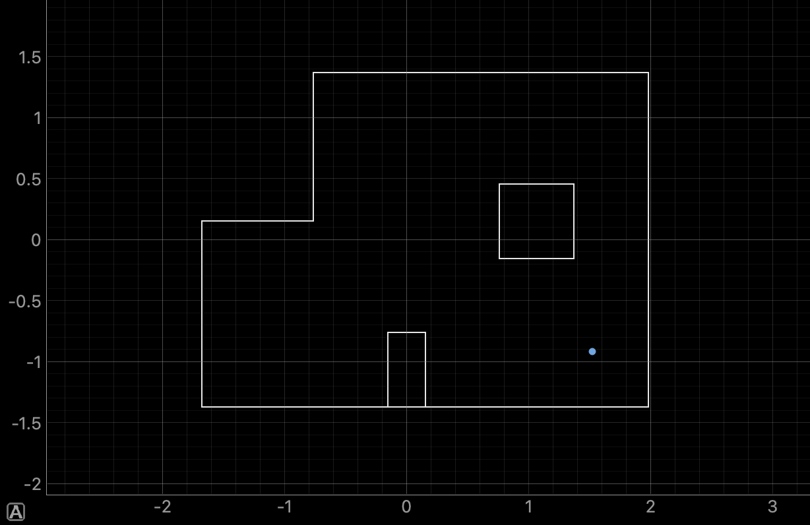
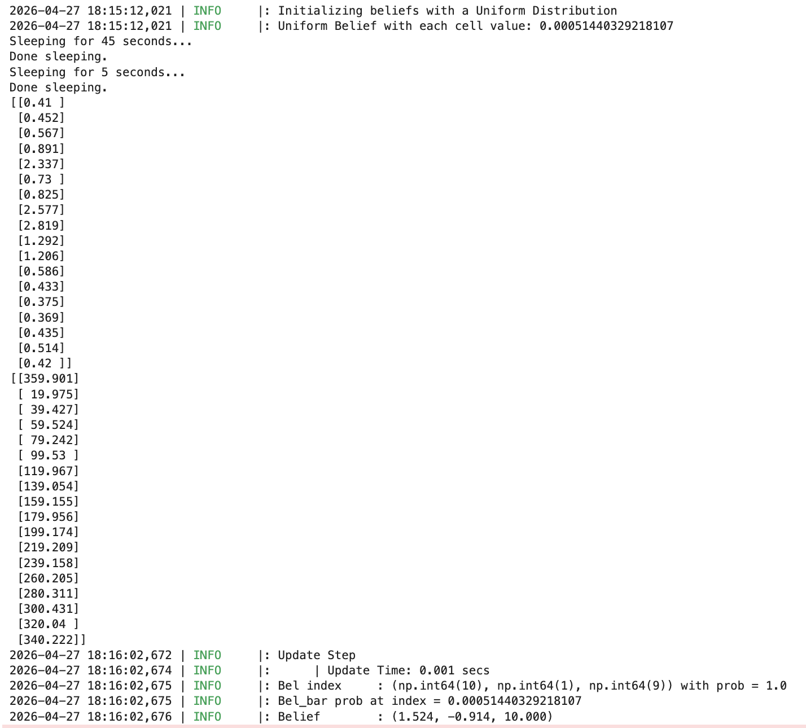
Point (5,-3) was also alright at localizing. The point was surrounded by long walls on its two sides and unique walls across from these, helping localization converge. However, the outer walls were too close and created considerable noise along a number of its distance measurements. The following illustrates one of its worst runs.
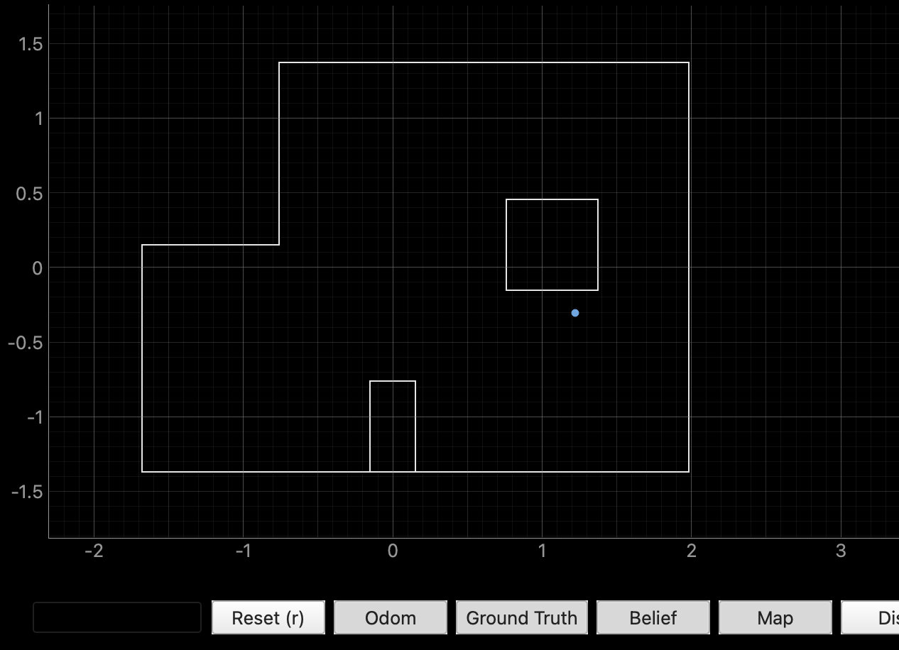
Conclusion
The grid localization performed best when the batteries were fully charged and several iterations were conducted. Grid locations where the ToF sensor had several objects at the desired range of the long distance mode, around 4 m, performed the best, whereas locations with close walls and large gaps performed less reliably. My first few runs suffered from variables in the map changing, such as human movement and adjacent robots, in addition to a lower charged battery which required a higher proportional PID value.
References
I referred to Aidan Derocher’s website from last year for this project, and used ChatGPT to transform this report into an HTML file.